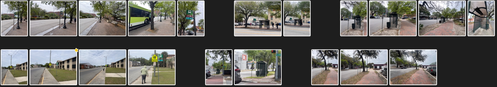
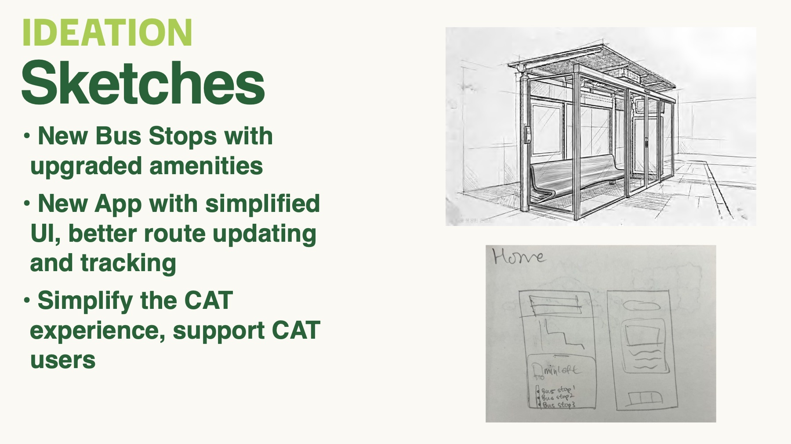
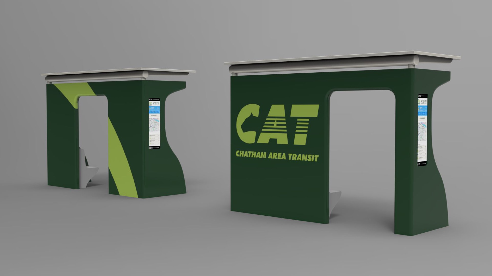
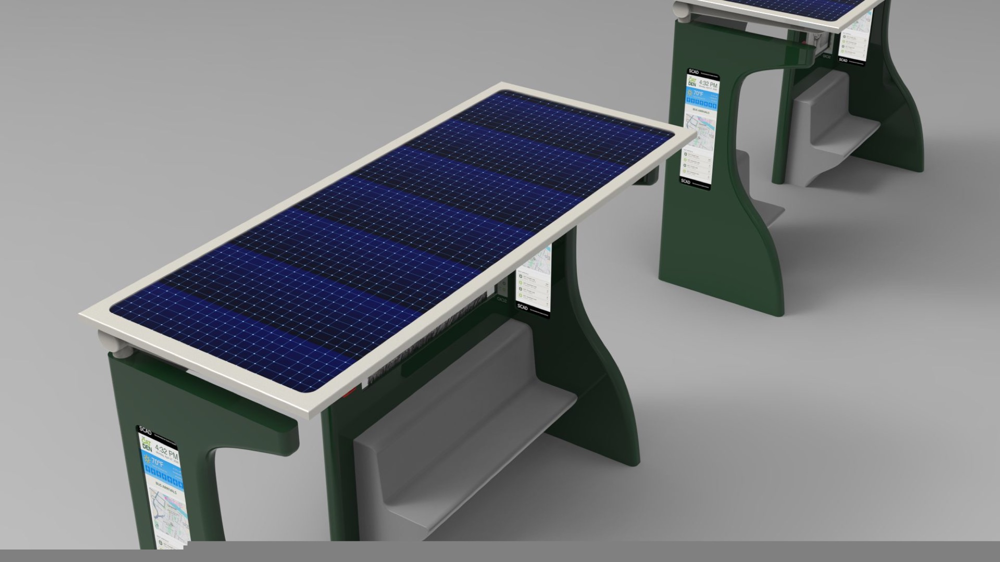
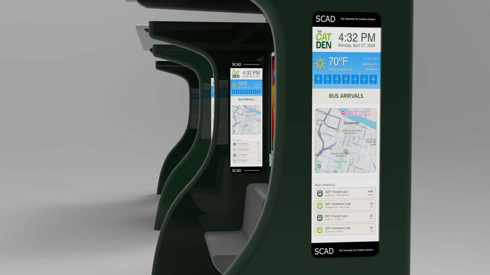
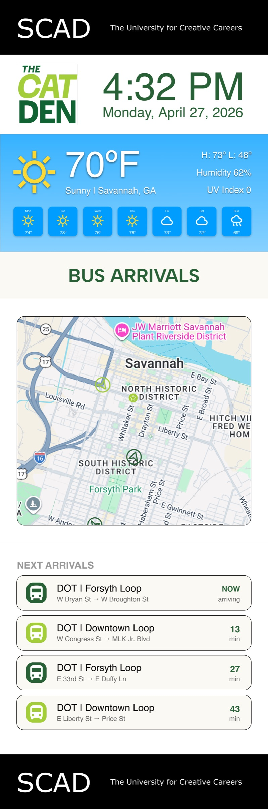
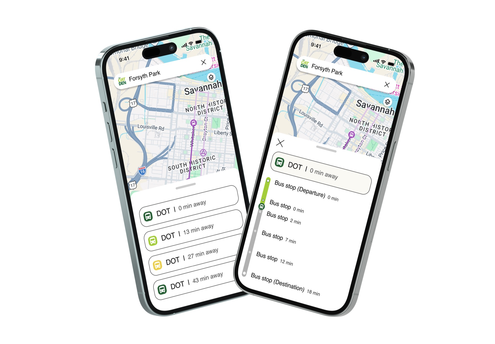
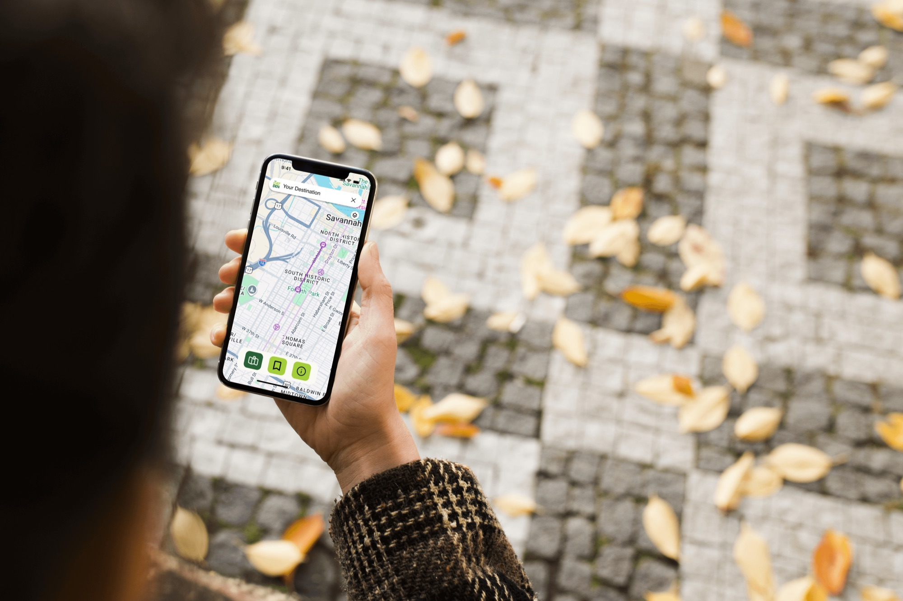

2026
The CAT Den
A redesigned bus stop for Savannah's Chatham Area Transit, and the tracking app that goes with it.


- Role
- App design, with Evie Wang
- Class
- FOUN 113, Spring 2026
- Team
- Trevor Josten, Evie Wang, Roame Poindexter, Aaron Choi
- Timeline
- 3 weeks
Problem
A pole with a sign
A lot of Chatham Area Transit (CAT) bus stops in Savannah are a pole with a sign. There is no shade and no seat, in a city where summer heat is a safety issue.
Schedules and route maps technically exist. They are PDFs that are hard to find on the CAT website, and once you find one you have to scroll all the way down to read it. Even then, the schedules do not match when the buses actually come.
CAT carries about 4 million passenger trips a year. Many riders work shift jobs in healthcare, retail, and food service, and a missed bus can mean a missed shift. Riders have learned not to trust the system. They show up 30 to 60 minutes early, call customer service, or pay for a rideshare on days that matter.
Research
What other cities already learned
We visited stops around Savannah, talked to people who ride CAT, and read rider reviews. Then we looked at three transit systems that had already tried to fix the same problem.

Both riders we interviewed take the bus to Walmart. One of them told us a canopy and a chair would be nice, and that some people bring their own folding chairs to wait. He does not know when the bus will come, so he just waits.
- Los Angeles. Shade-first modular shelters with low-cost E Ink arrival displays, paid for in part by advertising built into the shelter.
- Houston. A redrawn network that moved resources to frequent routes and grew ridership without a bigger budget.
- Utah. Upgraded stops saw ridership grow 92% faster than stops left alone.
The takeaways for Savannah: shade is a necessity, real-time arrivals matter more than anything else on the screen, and the stop has to help pay for itself.
Process
Five people, four majors
Our team came from different majors: UX design, advertising and branding, industrial design, and film and television. We split the work by what each of us studies and met twice a week to keep the pieces matching.
Roame, our industrial design student, designed and modeled the whole shelter. Trevor built the brand, Aaron led concept and ideation, and Evie and I designed the app.
I worked on the screens. I designed the tracker app with Evie, and the arrivals display that sits inside the shelter. I also helped find images for the project.
The project ran from March 31 to April 21. The first week was research and a mind map. After that the app went from low-fidelity wireframes to mid and high fidelity, then to an interactive prototype, while the shelter was being modeled and rendered next to it.

Solution
One system, two parts
The stop
A shaded shelter with built-in seating, a solar roof that powers it, and screens that show live arrivals next to work by SCAD students.



The app
Search a destination, see which buses are coming and how many minutes away each one is, then follow a single bus stop by stop. The display in the shelter shows the same information in the same style, so a rider only has to learn it once.



Outcome
What I learned
This was my first project with people from other majors. The bus stop itself was designed by our industrial design student. My job was the screen inside it and the app on the phone, and both had to fit a structure someone else was building.
None of us could have made this alone. A UX student, a branding student, an industrial design student, and a film student each brought something the others did not have.